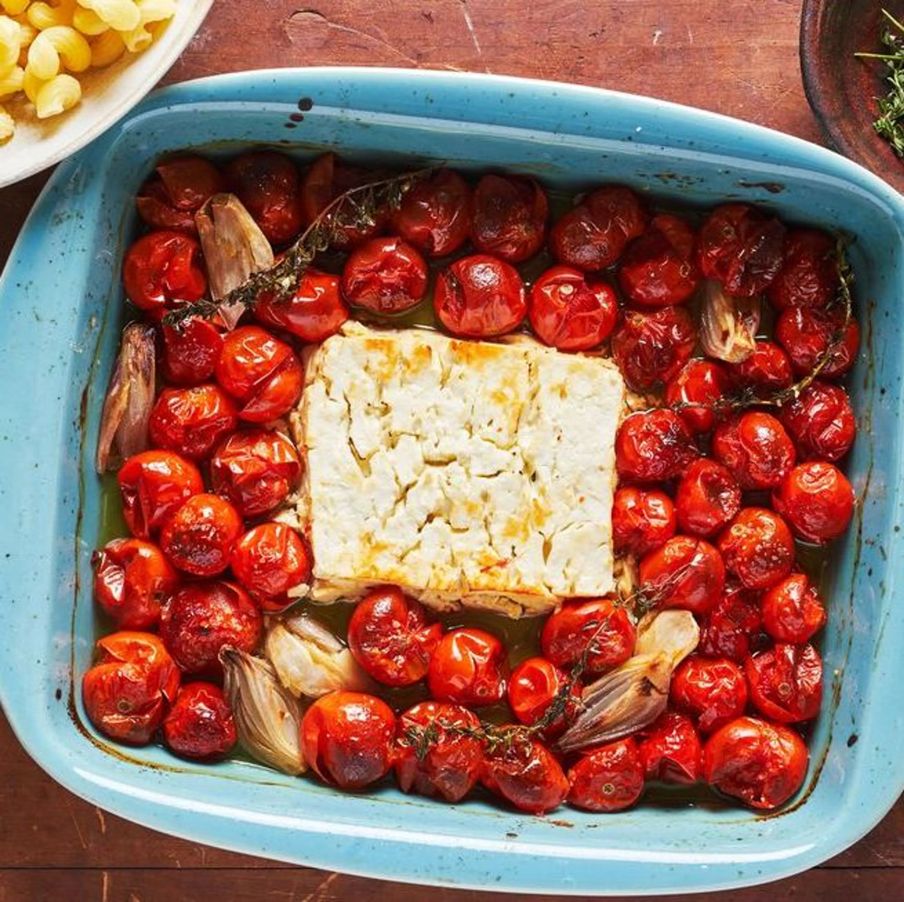

Baked Feta Pasta

Taste the viral sensation that's sweeping the nation!
Ingredients
- 5.3 oz. / 300 g Feta
- 1 kg cherry tomatoes
- 4 tablespoons (garlic infused) olive oil
- Salt, Pepper, Crushed red peppers
- 10.5 oz. / 600 g lentil/chickpea pasta
- Optional: Basil
Makes 6 Servings
Steps
- Preheat the oven to 400°F / 200°C.
- Toss tomaotes and garlic with olive oil in baking dish. Place the feta in the center and season with salt, pepper and cherry tomatoes.
- Bake for 30 minutes until the tomatoes burst and the feta is golden.
- While the vegetables are baking, prepare the pasta according to the box. Save some of the pasta water once done.
- Mash the Feta and tomatoes until combined into a creamy sauce. Then add the pasta and a splash of the pasta water.
- Optional: Add basil on top.
Back to Home